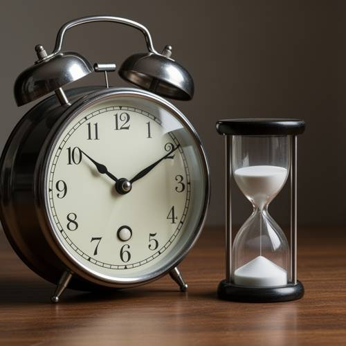
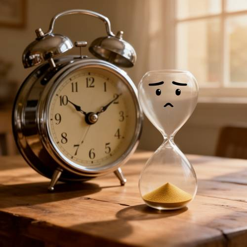
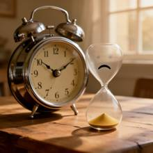
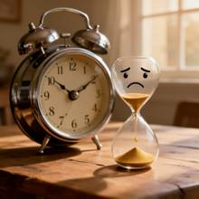
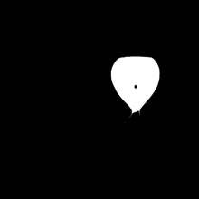
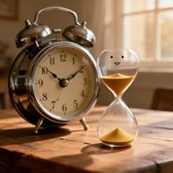

Logical Reasoning — Next to a huge metal alarm clock, a small glass hourglass looked sad b
Next to a huge metal alarm clock, a small glass hourglass looked sad because its sand had run out and seemed to lament the passage of time.

Direct — one call, no iteration

Continuum — Kimi K3 + FLUX.2-dev
Judge — Direct
FAILLogical Reasoning — The sand in the hourglass has almost completely run out, with the vast majority collected in the bottom bulb. However, the hourglass is an inanimate object and does not exhibit any visual characteristics of being sad. Therefore, the logical connection that the hourglass is sad 'because' its sand has run out is not visually represented.
FAILAttribute - Expression — The hourglass is a standard, inanimate object. It has no face or any features that could convey a sad expression or any emotion.
PASSAttribute - Material — The alarm clock has a silver-toned, reflective casing and bells, which are characteristic of metal. The hourglass is made of a transparent material, consistent with glass, through which the white sand is visible.
PASSAttribute - Size — The image displays a clear size difference between the two objects. The alarm clock is significantly larger in both height and width than the hourglass, which appears small in comparison.
Judge — Continuum
PASSLogical Reasoning — The image depicts an hourglass with a sad facial expression. Visually, all the sand is in the bottom bulb of the hourglass, meaning its sand has 'run out'. The image presents both conditions required by the logical statement.
PASSAttribute - Expression — The upper bulb of the hourglass has a simple cartoon face drawn on it. The eyebrows are slanted downwards and the mouth is a downturned curve, which are conventional representations of sadness.
PASSAttribute - Material — The alarm clock has a silver-colored, shiny, and reflective surface, which is characteristic of metal. The hourglass is transparent, which is characteristic of glass.
PASSAttribute - Size — On a wooden table, a twin-bell alarm clock is placed next to an hourglass. The alarm clock is significantly larger in both height and width than the hourglass, making the clock appear 'huge' in comparison to the 'small' hourglass.
What the agent did
Thinking
We need answer to user likely prompt for image generation benchmark. Need generate image from description, inspect, edit until match, mark best. Need use flux2-dev every call. Need not set seed, omit steps/guidance. We need produce image depicting next to huge metal alarm clock, small glass hourglass looked sad because its sand had run out and seemed to lament passage of time. Need likely anthropomorphic sad hourglass? We need interpret. Need generate first. Need call generate_image with model flux2-dev, prompt detailed visual only. Then inspect (we can view output inline ourselves; maybe use inspect_region if details). Need maybe no explicit inspection tool needed for whole image; we can reason after image returned. Must mark best when good. Need continue until prompt elements present and correct. Let's plan prompt: "A whimsical still-life scene on a wooden table: a huge vintage metal alarm clock with round silver bells dominates left/behind, next to it a small delicate glass hourglass with a sad face (drooping eyebrows, downturned mouth) because nearly all sand has run out into bottom bulb, only a few grains left at top, tiny trickle stopped; the hourglass appears to mourn time passing, melancholic mood, soft warm light, shallow depth of field, storybook realism." Need maybe "small glass hourglass looked sad" not necessarily face? Could include subtle anthropomorphic expression. Need huge metal alarm clock next to small hourglass. Ensure composition fits. Need call generate_image. Let's do. Use model flux2-dev. Maybe width/height defaults 1024. Then evaluate. Need no extra text to user until final maybe. Let's generate.
Step 1 — `generate_image`
{
"model": "flux2-dev",
"prompt": "A whimsical melancholic still life on a wooden table: an enormous vintage chrome metal alarm clock with round twin bells looms behind on the left, next to a tiny delicate glass hourglass in the foreground. The small hourglass has a subtle sad face\u2014drooping eyebrows and a downturned mouth\u2014because its sand has completely run out; the top bulb is empty, the bottom bulb holds a small pile of golden sand, and only one last grain hangs in the narrow neck. It seems to mourn the passage of time. Soft warm window light, gentle shadows, shallow depth of field, storybook realism, detailed textures, cozy but bittersweet mood."
}
Result img_0
Thinking
Need inspect image mentally: It has huge metal alarm clock next to small hourglass. Hourglass sad face clear. But sand has NOT run out? Top bulb still has a lot of golden sand and stream flowing. Prompt says sand had run out, top empty, bottom small pile, maybe one last grain. The generated has top nearly half full and actively pouring. Need edit to empty top bulb, sand mostly bottom, no active stream/last grain only. Also huge clock is large, small hourglass, good. Need targeted edit. Use edit_image model flux2-dev with delta: make hourglass top bulb empty, bottom bulb fuller with settled sand, stop flowing stream; keep sad face, clock etc. Since edit_image delta not cumulative; mention only change. Need preserve look maybe references? Current image good aside from sand state; pass reference img_0 maybe to lock face/clock. Prompt: "Change only the hourglass sand state: empty the upper bulb completely, settle all golden sand into the lower bulb as a still mound, remove the falling stream except one suspended last grain near the neck. Keep the sad face, glass shape, alarm clock, lighting and table unchanged." Use image img_0, references [img_0]? Maybe references to lock. Need model flux2-dev. Then inspect. Also mark img_0? It's decent but not fully correct; don't mark yet? Could mark because if interrupted returns okay but sand wrong. Better mark after edit? We can mark img_0 as willing? It has most elements, only sand state wrong. Mark early per policy. Let's mark img_0 then edit. Need one tool at time? Can call mark and edit sequentially? Mark then edit. Maybe mark img_0 first.
Step 2 — `mark_best`
{
"image": "img_0",
"reason": "Strong composition and clear sad hourglass beside huge metal alarm clock; sand state still needs correction."
}
Thinking
Now edit from best. Use edit_image image best, references best maybe redundant? Since image=best already; references maybe include img_0 to preserve. Prompt concrete change only. Need model flux2-dev. No steps/guidance/seed.
Step 3 — `edit_image`
{
"image": "best",
"model": "flux2-dev",
"prompt": "Change only the hourglass sand state: empty the upper glass bulb completely, settle the golden sand as a still mound in the lower bulb, remove the falling stream except one suspended last grain near the narrow neck. Keep the sad face, glass hourglass shape, huge metal alarm clock, wooden table, warm lighting and composition unchanged.",
"references": [
"img_0"
]
}
Result img_1
Thinking
Now img_1: top bulb empty except tiny grain, bottom has mound; face became less sad? Eyebrows are horizontal, mouth absent? Actually sad mouth gone; it has worried/flat expression, eyes black, one sweat/tear? It may look less sad. Prompt requires looked sad and lament passage. Need maybe restore downturned mouth and drooping eyebrows while keeping empty top. Current has top empty and bottom mound good, huge clock good. Need inspect face crop perhaps use inspect_region for detail. Let's inspect hourglass face to see. Use inspect_region img_1 roi text "the hourglass face" or rectangle. Need maybe full image enough but small. Use inspect_region. Then decide. Need mark img_1? It is closer (sand fixed) but face less sad. Could mark after if better. Need compare: img_0 had sad mouth but wrong sand; img_1 has correct sand but face less sad (still worried eyes maybe no mouth). Since prompt emphasizes sad because sand run out; img_1 overall may better but need add frown. Use inspect_region first.
Face crop: eyebrows drooping? Actually eyebrows slope down toward center? It has worried/sad eyebrows but no mouth. Need add small downturned mouth; maybe a tiny tear to express lament. Sand state good. Need targeted edit add sad downturned mouth and perhaps tear, keep everything else. Use edit_image img_1 model flux2-dev. Since only change face. Mark img_1 as best first? It is better than img_0 in sand, but missing mouth. Still most elements. We can mark img_1 now as best before edit (if edit worsens). Then edit.
Step 5 — `mark_best`
{
"image": "img_1",
"reason": "Sand state is now correct: upper bulb empty, lower bulb settled, huge metal clock beside it; only the frown needs strengthening."
}
Thinking
Now edit face only. Prompt: "Add a small downturned black mouth under the hourglass eyes and keep drooping eyebrows; keep empty top bulb, settled bottom sand, clock, lighting unchanged." Maybe mention make expression mournful. Use references img_1 to lock. Need ensure edit doesn't change sand.
Step 6 — `edit_image`
{
"image": "best",
"model": "flux2-dev",
"prompt": "Add a small downturned black frown mouth beneath the hourglass eyes so the face looks unmistakably sad and mournful; keep the drooping eyebrows, empty upper bulb, settled sand mound in the lower bulb, one suspended grain, metal alarm clock, warm lighting and composition unchanged.",
"references": [
"img_1"
]
}
Result img_3

Thinking
Oops edit made eyes/eyebrows vanish, mouth is a black curved shape floating mid bulb (looks like smile? Actually curve downward? It's like black arc with no eyes). Worse. Need revert to best img_1 (marked) and perhaps use different approach. Since img_3 worse, keep mark img_1. Need maybe edit from img_1 with inpaint for face only to add mouth without affecting rest. Could use segment/inpaint? Need pixel-exact outside face? We can use inpaint localized mask around upper bulb face to add facial features. But inpaint small region limited detail; still might work. Alternatively edit_image again from img_1 with prompt more precise and references img_0 for face? Maybe try edit_image from img_1: "Restore the small sad face from the reference: drooping eyebrows, two black eyes, downturned mouth" with references [img_0] to borrow face. Need be careful: edit_image can use reference to take feature. Prompt: "Take only the hourglass facial expression from the reference (drooping eyebrows, two black eyes, small downturned mouth) and place it on the hourglass in the main image; keep empty top bulb and settled bottom sand unchanged." Since img_0 has good sad face and img_1 has correct sand. This might merge. Use image img_1, references img_0. But FLUX edit with references may change composition? Try. Need ensure model flux2-dev. Since img_3 is bad, we already have img_1 marked. Use image="best" (img_1), references ["img_0"]. Prompt: change only face to match reference's sad face; keep sand state from main. Could work. If fails, mark remains img_1. Let's do edit_image from best with reference img_0.
Step 7 — `edit_image`
{
"image": "best",
"model": "flux2-dev",
"prompt": "Take only the sad hourglass facial expression from the reference image\u2014drooping eyebrows, two black eyes, small downturned mouth\u2014and apply it to the hourglass in the main image. Keep the main image's empty upper bulb, settled lower sand mound, suspended last grain, alarm clock, lighting and composition unchanged.",
"references": [
"img_0"
]
}
Result img_4

Thinking
img_4 essentially reverted to img_0: sad face good but sand top full and flowing. Reference overpowered; not acceptable. Need maintain mark img_1. Need maybe use inpaint to add sad face to img_1 only, preserving sand and rest. Since edit_image either removed eyes or copied full sand from ref. Need localized inpaint mask around face region upper bulb, prompt contents: sad face on glass (drooping eyebrows, black eyes, downturned mouth) while preserving sand etc. Because inpaint regenerates only white mask; if mask region is just face markings (small), can add features; outside pixel-exact. But inpaint text-only cannot copy exact face, but can draw simple black sad face. Need mask around area where eyes/eyebrows/mouth should be in upper bulb. Use segment_points? We can create mask with points on face area? Better use segment maybe text "the hourglass face markings" on img_1? There are eyebrows/eyes only, could segment black facial features but we need include mouth area below. Inpaint needs mask region where new face will be; if mask only existing features, adding mouth outside mask won't happen. Need mask region covering upper bulb face area (forehead/face) but not entire bulb? Could use segment_points with positive points around eyes/eyebrows and lower where mouth should be; but SAM will segment glass bulb maybe too large. Could use manually create mask? No tool to draw mask except segment outputs. We can use segment_points with points around face region to get upper bulb? It may select whole hourglass or glass, too large. Inpaint large region might alter sand/glass. Alternatively use segment text "the sad face on the hourglass" likely segments only black features, not mouth. Then cannot add mouth outside. Could dilate? inpaint_image has dilate but if mask only black features, dilating around features maybe cover mouth area if enough? Existing features located upper face; mouth below ~50 px. Dilate 30 might not reach. Could use points including mouth location (where no feature) to guide SAM to face area? Point on empty glass might select whole glass bulb. Hmm. Maybe use edit_image from img_1 but with stronger localization and no references: "Add only two small black eyes and drooping eyebrows and a tiny downturned mouth on the upper bulb; do not alter sand." But previous edit removed eyes because it interpreted as replace? It added mouth but removed eyes due model weird. Try with different seed? We cannot set seed per benchmark notes (do not set seed). But can call again maybe random. Approach maybe okay but specifics wrong; try again with revised prompt. Need avoid losing img_1. Use image best img_1. Prompt more precise: "On the upper bulb of the hourglass, draw a minimal kawaii sad face: two small black oval eyes, two short drooping eyebrows angled down toward the center, and one small downturned black mouth below them. Do not touch the glass shape, sand, clock, table or lighting." This is one change but face. Try maybe. If fails, keep img_1. But we already tried similar; it removed eyes. Maybe because edit_image not good at adding tiny details while preserving; could use inpaint. Let's consider inpaint with mask. We can use segment_points on img_1 to select upper bulb face area by points: positive points at left eye, right eye, eyebrow, and mouth location; negative points on lower bulb/sand, clock, outside. It might segment the upper bulb or face region. If mask is upper bulb (too large) inpaint may redraw glass and maybe empty top still okay? Could fill only face area? Need mask around just face markings; perhaps use segment description "black facial features on the hourglass" to get existing eyes/eyebrows mask, then inpaint with dilate 40? It would regenerate around features and may include mouth if dilated enough. Inpaint prompt: "minimal sad face drawn on clear glass: drooping eyebrows, two black oval eyes, small downturned mouth" If mask covers eyes/eyebrows plus dilation maybe below eyes maybe mouth included if 60 px; but inpaint_image dilate max? No max given, use 60? It says use 10-30 for shape changes; larger may be okay? Overmask harmful. Could create mask of upper half of hourglass via segment description "the upper bulb of the hourglass" then inpaint that region with prompt including empty glass with sad face, no sand. That may preserve lower bulb/sand if mask excludes. If mask is upper bulb, inpaint can redraw upper glass empty with sad face; outside lower bulb/sand/clock pixel exact. This seems promising. Need segment text "the upper bulb of the hourglass" on img_1. Then inpaint prompt: "the empty upper glass bulb of a small hourglass with a minimal sad face: drooping eyebrows, two black eyes, small downturned mouth; clear glass, warm light". It will regenerate upper bulb only; bottom sand preserved if mask accurate. Need ensure mask doesn't include lower bulb/sand. Use segment (SAM3) text. Let's do segment on img_1 for upper bulb. Then inspect mask maybe. Then inpaint. Need if mask includes entire hourglass maybe adjust. Use threshold maybe 0.3.
Step 8 — `segment`
{
"image": "img_1",
"description": "the upper glass bulb of the small hourglass",
"negative_descriptions": [
"the lower glass bulb of the hourglass",
"the golden sand",
"the metal alarm clock"
],
"threshold": 0.3,
"mask_threshold": 0.5
}
Result img_5

Thinking
Mask img_5 is upper bulb with hole? White region includes upper bulb, black outside. Great. Inpaint only upper bulb; need prompt contents of region. But inpaint regenerates entire white upper bulb, possibly could distort boundary/neck; mask includes neck maybe. Lower bulb/sand preserved. Need prompt: "clear empty upper glass bulb of a small hourglass, with a minimal sad face drawn on the glass: drooping eyebrows, two black oval eyes, small downturned mouth; transparent glass highlights, warm light; no sand in this bulb". It should draw sad face and empty. Use inpaint_image image img_1 mask img_5, model fixed? Inpaint always FLUX Fill, no model param. Prompt describes contents. Use guidance default (30) omit. dilate 0? Since mask fits upper bulb; no dilate to preserve shape. Need maybe if inpaint changes neck/sand? outside exact. Try.
Step 9 — `inpaint_image`
{
"image": "img_1",
"mask": "img_5",
"prompt": "clear empty upper glass bulb of a small hourglass, transparent with soft warm highlights, no sand inside, with a minimal sad face drawn on the glass: two short drooping eyebrows angled down toward the center, two small black oval eyes, and a small downturned black mouth"
}
Result img_6

Thinking
Inpaint failed: made happy face and reintroduced sand in upper bulb, worse. Keep img_1 marked. Need maybe stop? img_1 has all essential? It has sad eyebrows/eyes but no mouth; sand run out correct; huge metal alarm clock; next to; glass hourglass; melancholic maybe conveyed by eyebrows and empty sand. It might be acceptable though face lacks mouth. Could maybe use another edit attempt from img_1 to add mouth using edit_image but prompt maybe specifically "Do not remove the existing eyes and eyebrows". Previous attempt removed them. We can try once more maybe with stronger wording, if fails keep img_1. Use edit_image img_1: "Keep the existing two black eyes and drooping eyebrows exactly where they are; add only a tiny downturned black mouth below them. Everything else unchanged." Maybe because previous said add mouth and model removed eyes; emphasizing keep existing may help. Try one more. Use references img_1 to lock.
Step 10 — `edit_image`
{
"image": "best",
"model": "flux2-dev",
"prompt": "Keep the existing two black eyes and drooping eyebrows on the hourglass exactly as they are; add only a tiny downturned black mouth below them. Do not change the empty upper bulb, settled sand mound, glass shape, alarm clock, table, lighting or composition.",
"references": [
"img_1"
]
}
Result img_7
Thinking
img_7 looks good: sad eyebrows eyes and small downturned mouth; upper bulb empty? It appears empty clear; bottom mound settled; huge clock. There may be tiny white line in neck but no sand stream. This matches well. Need inspect face maybe maybe mouth correct. Could inspect region quickly to verify frown; full image shows clear. Need mark img_7 as best (better than img_1). Then stop. Need maybe ensure no issue: clock numbers maybe weird but prompt doesn't require exact time. The hourglass next to huge metal alarm clock, sad because sand run out. Good. Need mark img_7. Then final concise tell user done. Ensure last action mark.
Step 11 — `mark_best`
{
"image": "img_7",
"reason": "Best match: huge metal alarm clock beside a small sad glass hourglass, upper bulb empty with sand settled below and a clear mournful expression."
}
Thinking
Need final to user. Since user gave a prompt, likely expects image. We can say created and refined. Mention final image marked. No extra details. Ensure no claim false. Final concise.
Model
Done — the final image shows the huge metal alarm clock beside the small sad hourglass, with its sand run out and settled below.